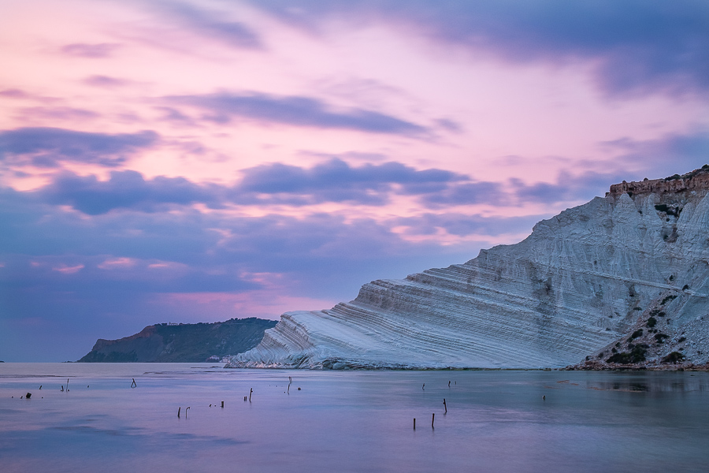

Fotografia di paesaggio, Etna e street
Gallerie
Vedi tutte


Scatti di paesaggio, dell'Etna e della Sicilia, e qualche momento di vita urbana, raccolti per genere.

Scatti di paesaggio, dell'Etna e della Sicilia, e qualche momento di vita urbana, raccolti per genere.